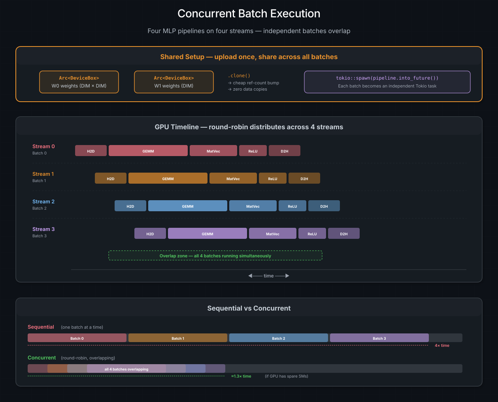

Project: Async MLP Pipeline#
You have learned how to define kernels, move data, compose operations with combinators, and schedule work across streams. Time to put it all together.
This chapter walks through async_mlp — the most complete example in the
cuda-oxide repository — from the first use statement to the final
[ReLU OK] on stdout. By the end you will have built a multi-kernel GPU
pipeline that processes four batches concurrently, using every async pattern
in the toolkit. If you have been reading the chapters sequentially, consider
this the final boss.
Ver también
The Concurrent Execution chapter covers the concepts behind concurrent pipelines in depth. This chapter focuses on the code — a complete, buildable project you can run, modify, and profile.
What we are building#
A toy multi-layer perceptron (MLP) forward pass on the GPU:
input [64×64] ──► GEMM(input, W0) ──► hidden [64×64]
│
MatVec(hidden, W1) ──► output [64]
│
ReLU(output) ──► result [64]
Three kernels, four stages (including the final device-to-host copy), four batches, four CUDA streams, one shared set of weights, and zero host threads sitting around waiting. Here is the big picture:
{kind=link}

Four MLP forward passes running concurrently. Shared weights are uploaded
once as Arc<DeviceBox> and cloned cheaply into each batch. The round-robin
scheduler distributes batches across four streams, and the staggered
pipelines overlap on the GPU timeline.#
The sequential approach processes one batch at a time — four times the work,
four times the wait. The concurrent approach overlaps them: if the GPU has
spare SMs, you finish in roughly the time of a single batch plus a small
stagger. Not a bad return on a handful of Arc::clone() calls.
Project structure#
The example lives at crates/rustc-codegen-cuda/examples/async_mlp/ and is a
standalone Cargo workspace member:
async_mlp/
├── Cargo.toml ← dependencies: cuda-device, cuda-core, cuda-async, tokio
└── src/
└── main.rs ← kernels + host code, single file
Everything — device kernels and host orchestration — lives in one file. The
#[kernel] attribute tells the compiler which functions become PTX; the rest
compiles as normal Rust. No separate .cu files, no header gymnastics, no
build-system split personality.
Dependencies#
The Cargo.toml pulls in exactly the crates we need:
[dependencies]
cuda-device = { path = "../../../cuda-device" } # #[kernel], DisjointSlice, thread::*
cuda-core = { path = "../../../cuda-core" } # CudaModule, LaunchConfig
cuda-async = { path = "../../../cuda-async" } # DeviceOperation, zip!, and_then, spawn
tokio = { version = "1", features = ["rt", "macros"] }
cuda-device provides the device-side API (intrinsics, safe mutable slices).
cuda-core handles module loading and launch configuration.
cuda-async provides the DeviceOperation graph, combinators, and the
stream-pool scheduler. tokio is the host async runtime that polls the
futures.
The GPU kernels#
These three functions are compiled to PTX by rustc-codegen-cuda. They never
execute on the host — the #[kernel] attribute renames each one to
cuda_oxide_kernel_<hash>_<name> so the codegen backend can identify and extract
them.
sgemm_naive — matrix multiply#
use cuda_device::{kernel, thread, DisjointSlice};
use cuda_device::thread::Runtime2DIndex;
#[kernel]
pub fn sgemm_naive(
m: u32, n: u32, k: u32,
alpha: f32, a: &[f32], b: &[f32],
beta: f32, mut c: DisjointSlice<f32, Runtime2DIndex>,
) {
let n_sz = n as usize;
let row = thread::index_2d_row();
let col = thread::index_2d_col();
// SAFETY: every thread sees the same `n_sz` (same kernel arg).
if let Some(c_idx) = unsafe { thread::index_2d_runtime(n_sz) } {
// col < n_sz guaranteed by `Some` -- no manual check needed
if row < m as usize {
let k_sz = k as usize;
let mut sum = 0.0f32;
let mut i = 0usize;
while i < k_sz {
sum = sum + a[row * k_sz + i] * b[i * n_sz + col];
i = i + 1;
}
if let Some(c_elem) = c.get_mut(c_idx) {
*c_elem = alpha * sum + beta * (*c_elem);
}
}
}
}
Each thread computes one element of the output matrix. The 2D thread index
maps directly to the (row, col) position. DisjointSlice checks bounds and
requires the matching index-space type. The remaining proof is explicit: every
thread uses the same runtime stride, Z is inactive, and the raw 2D launch shape
matches the kernel.
Truco
This is intentionally a naive GEMM — one thread, one element, no shared memory tiling, no coalescing tricks. A production GEMM would use the techniques from the Shared Memory chapter. But for demonstrating async composition, correctness beats performance.
matvec_naive — matrix-vector product#
#[kernel]
pub fn matvec_naive(
_m: u32, n: u32,
mat: &[f32], vec_in: &[f32],
mut vec_out: DisjointSlice<f32>,
) {
let row = thread::index_1d();
if let Some(out_elem) = vec_out.get_mut(row) {
let n_sz = n as usize;
let mut sum = 0.0f32;
let mut j = 0usize;
while j < n_sz {
sum = sum + mat[row.get() * n_sz + j] * vec_in[j];
j = j + 1;
}
*out_elem = sum;
}
}
One thread per output element, one-dimensional indexing. The _m parameter
is unused but keeps the calling convention consistent with BLAS-style
interfaces.
relu — activation#
#[kernel]
pub fn relu(input: &[f32], mut output: DisjointSlice<f32>) {
let idx = thread::index_1d();
if let Some(out_elem) = output.get_mut(idx) {
let val = input[idx.get()];
*out_elem = if val > 0.0f32 { val } else { 0.0f32 };
}
}
Elementwise max(0, x). In the pipeline, input and output point to the
same buffer — a perfectly valid in-place pattern since each thread reads and
writes the same index and the launch is 1D.
What to notice#
A few patterns that recur across all three kernels:
Pattern |
What it does |
|---|---|
|
Computes the global thread index from block/grid dimensions |
|
Bounds-checked mutable output; launch geometry completes the uniqueness proof |
|
Bounds check that silences threads beyond the data size |
|
Stylistic choice — |
Bridging host and device#
Three helper functions wrap raw CUDA driver calls into DeviceOperation
values. They use with_context to receive the scheduler’s stream at
execution time — not at the call site. This is the key insight: you build
the recipe now, the scheduler picks the stream later.
h2d — host to device#
fn h2d(host_data: Vec<f32>) -> impl DeviceOperation<Output = DeviceBox<[f32]>> {
device_operation::with_context(move |ctx| {
let stream = ctx.get_cuda_stream();
let n = host_data.len();
let num_bytes = n * mem::size_of::<f32>();
unsafe {
let dptr = malloc_async(stream.cu_stream(), num_bytes).unwrap();
memcpy_htod_async(dptr, host_data.as_ptr(), num_bytes, stream.cu_stream())
.unwrap();
value(DeviceBox::from_raw_parts(dptr, n, ctx.get_device_id()))
}
})
}
The host_data vector is captured by move. The closure runs when the
scheduler executes the operation — at that point it has a real CUDA stream.
malloc_async and memcpy_htod_async are stream-ordered, so the allocation
and copy are serialized on the scheduler’s chosen stream.
zeros — zero-initialized device buffer#
fn zeros(n: usize) -> impl DeviceOperation<Output = DeviceBox<[f32]>> {
device_operation::with_context(move |ctx| {
let stream = ctx.get_cuda_stream();
let num_bytes = n * mem::size_of::<f32>();
unsafe {
let dptr = malloc_async(stream.cu_stream(), num_bytes).unwrap();
memset_d8_async(dptr, 0, num_bytes, stream.cu_stream()).unwrap();
value(DeviceBox::from_raw_parts(dptr, n, ctx.get_device_id()))
}
})
}
Same pattern as h2d, but memset_d8_async instead of memcpy. The GEMM
kernel uses beta = 0.0 so the initial contents do not matter, but zeroing
is defensive.
d2h — device to host#
fn d2h(dev: DeviceBox<[f32]>) -> impl DeviceOperation<Output = Vec<f32>> {
device_operation::with_context(move |ctx| {
let stream = ctx.get_cuda_stream();
let n = dev.len();
let num_bytes = n * mem::size_of::<f32>();
let mut host = vec![0.0f32; n];
unsafe {
memcpy_dtoh_async(
host.as_mut_ptr(), dev.cu_deviceptr(),
num_bytes, stream.cu_stream(),
).unwrap();
}
let _ = &dev;
value(host)
})
}
The let _ = &dev; line looks like a no-op, but it keeps dev alive in the
closure until the stream synchronizes. Without it, dev would be dropped
after the memcpy_dtoh_async call but before the stream finishes the copy —
a classic use-after-free on the device side.
Composing the pipeline#
Each batch is a single DeviceOperation built from combinators. No GPU
work happens when you assemble it — it is a lazy description of future work.
Here is how the pieces fit together:

The combinator pipeline for a single batch. zip! allocates three buffers
in parallel. The and_then chain sequences GEMM → MatVec → ReLU → D2H,
threading device handles through each stage via value().#
Step 1: Initialize the runtime#
const DIM: usize = 64;
const BLOCK: u32 = 16;
#[tokio::main]
async fn main() -> Result<(), Box<dyn std::error::Error>> {
init_device_contexts(0, 1)?;
let module = kernels::load_async(0)?;
init_device_contexts(0, 1) sets device 0 as the default and initializes
the device context map (capacity 1). The round-robin stream pool is created
lazily on first use. The embedded module compiled from our #[kernel]
functions is loaded once and shared by the typed module handle.
Step 3: Build the per-batch pipeline#
This is where the magic lives. For each batch, we build a four-stage chain:
use cuda_async::launch::{AsyncKernelLaunchBuilder, OwnedAsyncKernelLaunch};
let pipeline = zip!(h2d(batch_data), zeros(DIM * DIM), zeros(DIM))
.and_then(move |(input, hidden, output)| {
// Stage 1: GEMM — hidden = input @ W0
let func = module.load_function("sgemm_naive").unwrap();
let mut builder = AsyncKernelLaunchBuilder::new(Arc::new(func));
builder.push_args((
DIM as u32, DIM as u32, DIM as u32,
1.0f32,
input.cu_deviceptr(), input.len() as u64,
w0.cu_deviceptr(), w0.len() as u64,
0.0f32,
hidden.cu_deviceptr(), hidden.len() as u64,
));
// SAFETY: packet/config match sgemm_naive, the scheduler uses the
// module's context, and the owned wrapper retains its allocations.
let launch = unsafe { builder.finalize_unchecked(gemm_cfg) };
let launch = OwnedAsyncKernelLaunch::new(launch, (input, w0, hidden));
launch.and_then(move |(_input, _w0, hidden)| {
value((hidden, output, w1, module))
})
})
.and_then(move |(hidden, output, w1, module)| {
// Stage 2: MatVec — output = hidden @ W1
let func = module.load_function("matvec_naive").unwrap();
let mut builder = AsyncKernelLaunchBuilder::new(Arc::new(func));
builder.push_args((
DIM as u32, DIM as u32,
hidden.cu_deviceptr(), hidden.len() as u64,
w1.cu_deviceptr(), w1.len() as u64,
output.cu_deviceptr(), output.len() as u64,
));
// SAFETY: packet/config match matvec_naive, the scheduler uses the
// module's context, and the owned wrapper retains its allocations.
let launch = unsafe { builder.finalize_unchecked(matvec_cfg) };
let launch = OwnedAsyncKernelLaunch::new(launch, (hidden, w1, output));
launch.and_then(move |(_hidden, _w1, output)| value((output, module)))
})
.and_then(move |(output, module)| {
// Stage 3: ReLU — result = max(0, output)
let func = module.load_function("relu").unwrap();
let relu_out: DeviceBox<[f32]> = output;
let mut builder = AsyncKernelLaunchBuilder::new(Arc::new(func));
builder.push_args((
relu_out.cu_deviceptr(), relu_out.len() as u64,
relu_out.cu_deviceptr(), relu_out.len() as u64,
));
// SAFETY: packet/config match relu, the scheduler uses the module's
// context, and the owned wrapper retains output.
let launch = unsafe { builder.finalize_unchecked(relu_cfg) };
OwnedAsyncKernelLaunch::new(launch, relu_out)
})
.and_then(d2h);
A few things are worth slowing down for:
The value() baton. Each and_then closure consumes the previous
stage’s output and returns a DeviceOperation. Kernel launches return (),
so you need value() to carry forward the device handles the next stage
needs. Think of it as a relay baton — the kernel runs, the baton passes.
Type annotations. The deeply nested generics from zip! + and_then
chains exceed Rust’s type inference. You will need explicit annotations on
closure parameters:
.and_then(move |(hidden, output, w1, module): (
DeviceBox<[f32]>,
DeviceBox<[f32]>,
Arc<DeviceBox<[f32]>>,
Arc<CudaModule>,
)| { ... })
This is the one ergonomic rough edge. The Zippable trait import is also
required for zip! to work.
In-place ReLU. Stage 3 passes relu_out as both input and output
to the kernel. Since each thread reads input[idx] and writes output[idx]
at the same index, this is safe — no thread reads another’s write.
Raw launch boundary. The builder is inert. finalize_unchecked is where
the raw packet and geometry become runnable, so each call has a local safety
proof. OwnedAsyncKernelLaunch keeps its buffers alive. Prefer generated
owned-async methods with PreparedLaunch<K> when the kernel declares a launch
contract.
Step 4: Spawn and collect#
handles.push(tokio::spawn(pipeline.into_future()));
.into_future() converts the lazy DeviceOperation into a DeviceFuture.
At this point the scheduling policy picks a stream (batch 0 → stream 0,
batch 1 → stream 1, round-robin). tokio::spawn hands the future to the
Tokio runtime.
On the first poll, the pipeline’s execute() submits all GPU work to the
assigned stream and registers a cuLaunchHostFunc callback. The future
returns Poll::Pending. When the GPU finishes, the callback wakes the task.
No host thread spins.
for (i, handle) in handles.into_iter().enumerate() {
let result: Vec<f32> = handle.await.expect("Tokio task panicked")?;
let all_non_negative = result.iter().all(|&v| v >= 0.0);
println!("Batch {}: {} elements, first 8 = {:?}{}",
i, result.len(), &result[..8.min(result.len())],
if all_non_negative { " [ReLU OK]" } else { " [ReLU FAILED]" }
);
}
The ReLU sanity check is not deep learning validation — it just confirms
that the activation function ran. Every output should be non-negative. If
you see [ReLU FAILED], something upstream is very wrong.
Build, run, verify#
cargo oxide run async_mlp
Expected output:
=== Async MLP Pipeline ===
Allocating model weights...
W0: 64x64 on device (Arc refcount=1)
W1: 64 on device (Arc refcount=1)
Launched 4 batches concurrently, awaiting results...
Batch 0: 64 elements, first 8 = [0.0020799995, 0.0, ...] [ReLU OK]
Batch 1: 64 elements, first 8 = [0.0, 0.0, ...] [ReLU OK]
Batch 2: 64 elements, first 8 = [0.0, 0.00108, ...] [ReLU OK]
Batch 3: 64 elements, first 8 = [0.00244, 0.0025, ...] [ReLU OK]
SUCCESS: All batches completed.
The Arc refcounts start at 1 (one reference each for w0 and w1). During
batch processing they temporarily rise to 5 (original + four clones) and
drop back as batches complete. If you add more batches, the refcounts scale
accordingly — no copies, no reallocation.
Profiling with Nsight Systems#
To see the stream overlap in action:
nsys profile --trace=cuda cargo oxide run async_mlp
nsys-ui report.nsys-rep
In the timeline view, look for four parallel rows of kernel blocks — one per
stream. If kernels are serialized on one stream, the round-robin scheduler
is not being used (likely init_device_contexts was not called, or only one
stream was configured).
What makes this «real»#
This is still a toy — 64×64 matrices, fake weights, three kernels. But the structure is the same as production GPU pipelines:
Production pattern |
async_mlp equivalent |
|---|---|
Model weights loaded once, shared across requests |
|
Per-request inference pipeline |
|
Concurrent request processing |
|
Stream-based GPU scheduling |
Round-robin |
Non-blocking host |
|
Scale the matrices from 64 to 4096, replace the naive kernels with tiled shared-memory versions (see Shared Memory), add more layers, and you have the skeleton of a real inference server.
Extending the example#
A few ideas for taking this further:
Add a softmax layer. Write a #[kernel] that computes the
numerically stable softmax
across the 64-element output vector. Chain it with another .and_then after
ReLU.
Profile at larger dimensions. Change DIM to 512 or 1024. Watch the
GEMM dominate the timeline. Then replace sgemm_naive with a tiled version
using SharedArray and observe the speedup.
Add error recovery. Replace .unwrap() in the kernel launch closures
with proper Result propagation. Use the three-arm match pattern from
the Concurrent Execution
chapter to handle GPU errors and task panics independently.
Multi-device. Pass init_device_contexts(0, 2) to manage two GPUs.
Build a batch splitter that routes even batches to GPU 0 and odd batches to
GPU 1.
Ver también
The DeviceOperation Model — how lazy GPU graphs work
Combinators and Composition —
and_then,zip!,value(),.arc()in detailScheduling and Streams — round-robin, stream pools, scheduling policies
Concurrent Execution — the theory behind everything in this chapter